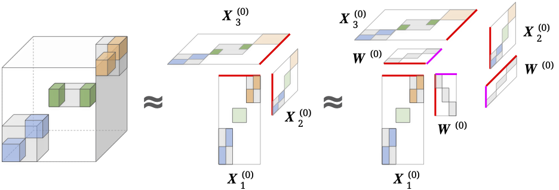
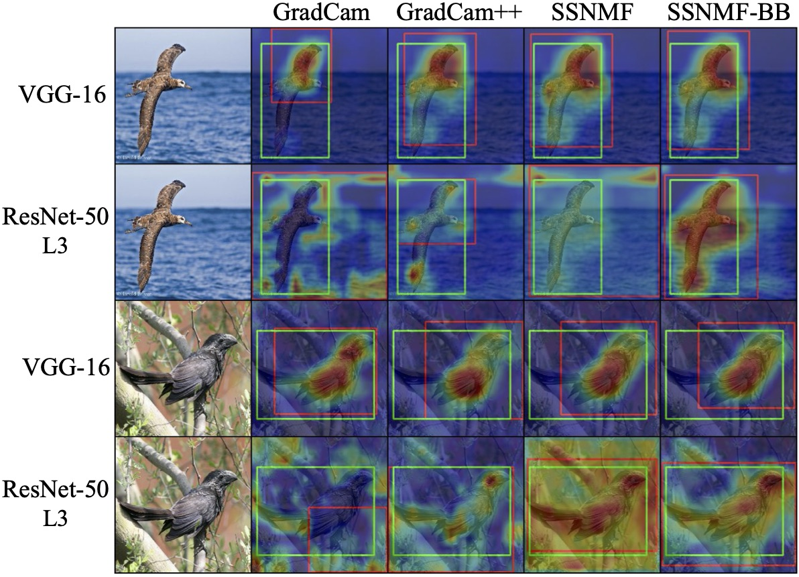
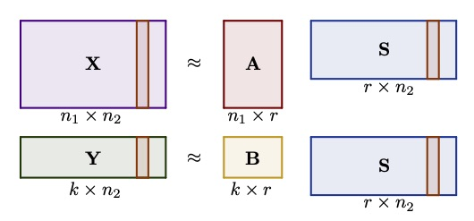
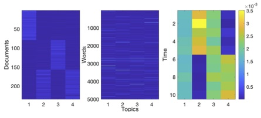
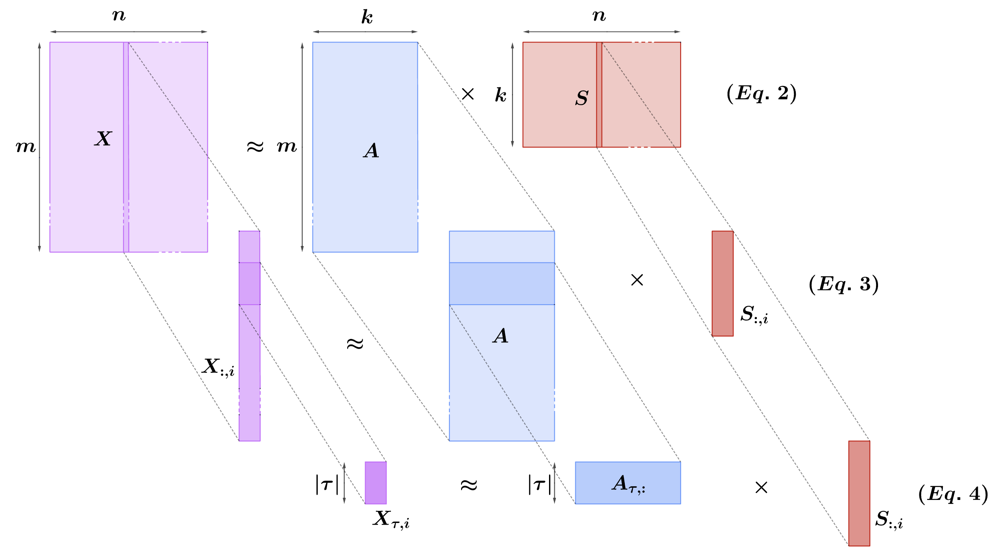
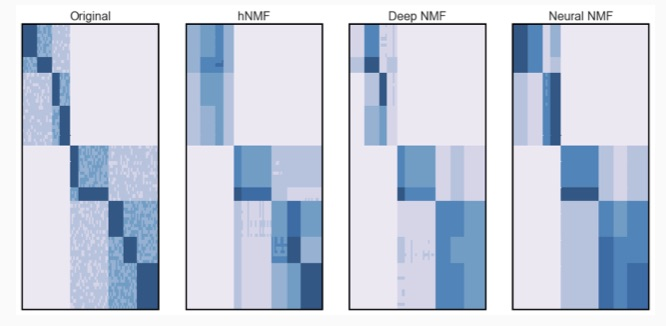
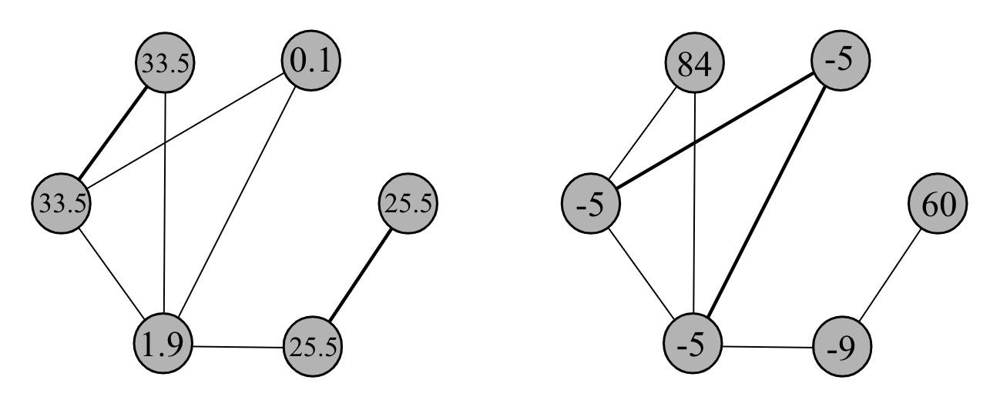
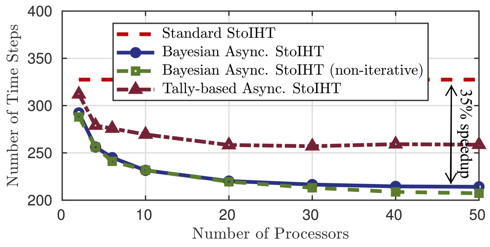
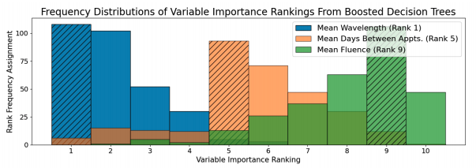

by J. Vendrow, J. Haddock, D. Needell
Proc. 55th Asilomar Conference on Signals, Systems and Computers, Pacific Grove, CA, November 2021.
[ BibTeX ] [ Code ]
|  |
by J. Vendrow, J. Haddock, D. Needell Submitted, 2021. [ arXiv ] [ BibTeX ] [ Code ] |
|  |
by E. Sizikova, J. Vendrow, R. Grotheer, J. Haddock, L. Kassab, A. Kryshchenko, T. Merkh, M. Rajapaksha, H. V. Vo, C. Wang, K. Leonard, D. Needell Submitted. 2020. [ BibTeX ] [ Code ] |
|
|
by J. Vendrow, J. Haddock, D. Needell Proc. 55th Asilomar Conference on Signals, Systems and Computers, Pacific Grove, CA, November 2021. [ BibTeX ] [ Code ] |
|  |
by M. Ahn, R. Grotheer, J. Haddock, L. Kassab, A Kryshchenko, K. Leonard, S. Li, A. Madushani, T. Merkh, D. Needell, E. Sizikova, C. Wang Proc. 55th Asilomar Conference on Signals, Systems and Computers, Pacific Grove, CA, November 2021. [ arXiv ] [ BibTeX ] [ Code ] |

|
by J. Vendrow, J. Haddock, E. Rebrova, D. Needell Proc. Int. Conf. on Acoustics, Speech, and Signal Processing (ICASSP), Toronto, ON, June 2021. [ arXiv ] [ BibTeX ] [ Code ] |
|  |
by M. Ahn, N. Eikmeier, J. Haddock, L. Kassab, A. Kryshchenko, K. Leonard, D. Needell, A. Mudiyanselage, E. Sizikova, C. Wang Proc. Women in Data Science and Mathematics (WiSDM), Providence, RI, July 2019. [ arXiv ] [ BibTeX ] |

|
by J. Haddock, L. Kassab, A. Kryshchenko, D. Needell Proc. Information Theory and Applications (ITA), San Diego, CA, February 2020. [ BibTeX ] |

|
by M. Gao, J. Haddock, D. Molitor, D. Needell, E. Sadovnik, T. Will, R. Zhang Proc. Interational Workshop on Computational Advances in Multi-Sensor Adaptive Processing (CAMSAP), Guadeloupe, West Indies, December 2019. [ Proceedings ] [ BibTeX ] [ Code ] [ Slides ] [ Video ] |
|  |
by E. Chau, J. Haddock Submitted, 2020. [ arXiv ] [ BibTeX ] [ Code ] |
|  |
by T. Will, J. Haddock, R. Zhang, D. Molitor, D. Needell, M. Gao, E. Sadovnik In preparation. 2019. [ arXiv ] [ BibTeX ] [ Code ] [ Slides ] [ Video ] |
|  |
by J. Haddock, B. Jarman, C. Yap Submitted, 2021. [ arXiv ] [ BibTeX ] |

|
by J. Haddock, D. Needell, N. Rahnavard, A. Zaeemzadeh Proc. 53rd Asilomar Conference on Signals, Systems and Computers, Pacific Grove, CA, November 2019. [ Proceedings ] [ BibTeX ] [ Slides ] |
|  |
by A. Zaeemzadeh, J. Haddock, N. Rahnavard, D. Needell. Proc. 52nd Asilomar Conference on Signals, Systems and Computers, Pacific Grove, CA, October 2018. [ Proceedings ] [ BibTeX ] [ Poster ] |

|
by J.A. De Loera, J. Haddock, A. Ma, D. Needell Annals of Mathematics and Artificial Intelligence, 89(7), 711-735, 2020. [ arXiv ] [ Journal ] [ BibTeX ] |

|
by J. Vendrow, J. Haddock, D. Needell, L. Johnson Algorithms, to appear, 2020. [ arXiv ] [ BibTeX ] [ Code ] |

|
by L. Johnson, M. Shapiro, R. Stricker, J. Vendrow, J. Haddock, D. Needell Healthcare, vol. 8, no. 4, 383-404, 2020. [ Journal ] [ BibTeX ] |
|  |
by R. Yim, J. Haddock, D. Needell Submitted, 2021. [ arXiv ] [ BibTeX ] |